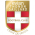

EQUIPE |
STADE |
LOGO |
|---|---|---|
SPORTING CLUB DE BASTIALe Sporting Club de Bastia, couramment abrégé en SC Bastia ou SCB, est un club de football français situé à Bastia, fondé en 1905 par Hans Ruesch. |
STADE ARMAND CESARI FURIANI | |
FC GIRONDINS DE BORDEAUXLe Football Club des Girondins de Bordeaux, appelé plus couramment les Girondins de Bordeaux, est un club de football créé en 1919 à Bordeaux. C'est une section du club omnisports des Girondins de Bordeaux omnisports jusqu'en 1981. |
STADE JACQUES CHABAN DELMAS | |
STADE MALHERBE DE CAENLe Stade Malherbe Caen Calvados Basse-Normandie est un club de football français basé à Caen et fondé en 1913. Il tire son appellation du lycée Malherbe, du nom du poète François de Malherbe. |
STADE MICHEL D'ORNANO | |
EVIAN THONON GAILLARD FOOTBALL CLUBL'Évian Thonon Gaillard Football Club est un club de football français, né en 2007 de la fusion du Football Croix-de-Savoie 74 et de l'Olympique Thonon Chablais. Le club est le seul représentant du football professionnel des Pays de Savoie. |
PARC DES SPORTS |  |
EN AVANT GUINGAMPL'En Avant de Guingamp est un club de football français qui évolue en Ligue 1 pour la saison 2014-2015, fondé en 1912 par Pierre Deschamps à Guingamp, en Bretagne. |
STADE DU ROUDOUROU | |
RACING CLUB DE LENSLe Racing Club de Lens, couramment abrégé en RC Lens ou en RCL, est un club professionnel de football français fondé en janvier 1906 et dont le siège se trouve à Avion, à trois kilomètres de la cité minière. |
STADE FELIX BOLLAERT | |
LILLE OLYMPIQUE SPORTING CLUBLe LOSC Lille, couramment abrégé en LOSC ou Lille OSC, est un club de football français. Fondé à Lille en septembre 1944, il est issu de la fusion de deux clubs basés dans différents quartiers de la ville, l'Olympique lillois et le Sporting Club fivois respectivement créés en 1902 et 1901. |
STADE PIERRE MAUROY | |
FOOTBALL CLUB DE LORIENTLe Football Club Lorient est un club de football français, fondé en 1926 à Lorient (Morbihan). |
STADE DU MOUSTOIR | |
OLYMPIQUE LYONNAISL'Olympique lyonnais, couramment abrégé en OL, est un club de football français fondé en 1950. Le club, basé dans le quartier de Gerland, est présidé depuis juin 1987 par Jean-Michel Aulas et l'équipe est entraînée par Hubert Fournier depuis le 23 mai 2014. Il évolue depuis 1989 en Ligue 1. |
STADE GERLAND | |
OLYMPIQUE DE MARSEILLEL'Olympique de Marseille (OM) est un club de football français fondé en août 1899 par René Dufaure de Montmirail. Dix titres de champion de France dont neuf professionnels, dix Coupes de France, trois Coupes de la Ligue, deux Trophées des champions et une Ligue des champions de l'UEFA composent le palmarès du club le plus titré et le plus populaire du football français. |
STADE VELODROME | |
FOOTBALL CLUB DE METZLe Football Club de Metz est un club français fondé en 1919, basé à Metz (Moselle). Professionnel depuis 1932 et membre fondateur du championnat de France, le FC Metz va disputer en 2014-2015 sa 58e saison dans l'élite, ce qui en fait un des clubs les plus réguliers dans l'élite. Il n'en a pourtant jamais remporté le titre. |
STADE SAINT SYMPHORIEN | |
ASSOCIATION SPORTIVE DE MONACOL'Association Sportive Monaco Football Club, abrégé en ASM, est un club de football monégasque fondé le 23 août 1924. Bien qu'elle ne soit pas située sur le territoire français, l'AS Monaco est affiliée à la Fédération française de football et participe au championnat de France, dont elle est la seule équipe non française professionnelle. |
STADE LOUIS II | |
MONTPELLIER HERAULT SPORTING CLUBLe Montpellier Hérault Sport Club est un club de football français basé à Montpellier et fondé en 1919 sous le nom de Stade Olympique Montpelliérain (SOM). |
STADE DE LA MOSSON | |
FOOTBALL CLUB DE NANTESLe Football Club de Nantes (FCN) est un club de football français, fondé à Nantes en 1943 par Marcel Saupin. Issu de la fusion de différents clubs nantais dans le but d'intégrer l'élite du football français, le FCN compte huit titres de champion de France et trois coupes de France, ce qui constitue l'un des plus beaux palmarès du football français (le 3e derrière Marseille et Saint-Étienne). |
STADE DE LA BEAUJOIRE | |
PARIS SAINT GERMAIN FOOTBALL CLUBLe Paris Saint-Germain Football Club (couramment abrégé en Paris SG ou PSG) est un club de football français basé à Paris, issu de la fusion en 1970 du Stade Saint-Germain, fondé en 1904, et du Paris FC fondé en 1969. |
PARC DES PRINCES | |
STADE DE REIMSLe Stade de Reims est un club de football français, fondé le 18 juin 1931 à Reims, en Champagne-Ardenne. Né de la réunion de plusieurs clubs, au premier rang desquels la Société sportive du parc Pommery, le Stade de Reims emménage en 1934 dans le nouveau vélodrome municipal, futur stade Auguste-Delaune. |
STADE AUGUSTE DELAUNE |  |
STADE RENNAISLe Stade rennais football club, couramment abrégé en Stade rennais, Stade rennais FC ou SRFC, est un club de football français fondé en 1901. |
STADE DE LA ROUTE DE LORIENT | |
ASSOCIATION SPORTIVE DE SAINT ETIENNEL'Association sportive de Saint-Étienne, abrégée en ASSE, AS Saint-Étienne, les Verts ou encore Sainté, est un club de football français fondé en 1919 par le Groupe Casino, et basé à Saint-Étienne. |
STADE GEOFFROY GUICHARD | |
TOULOUSE FOOTBALL CLUBLe Toulouse Football Club, couramment abrégé en TFC, est un club de football français fondé en 1970. Le club joue au Stadium Municipal de Toulouse. Le club est présidé par Olivier Sadran depuis 2001. |
STADIUM MUNICIPAL DE TOULOUSE |